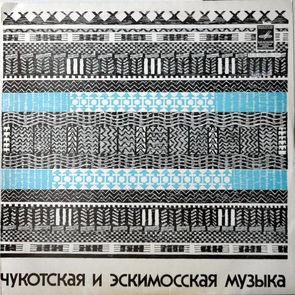
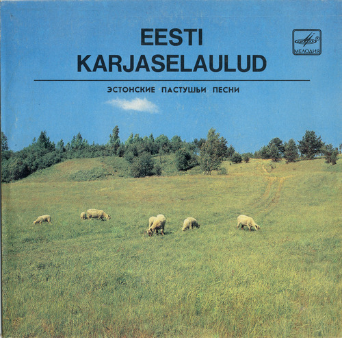
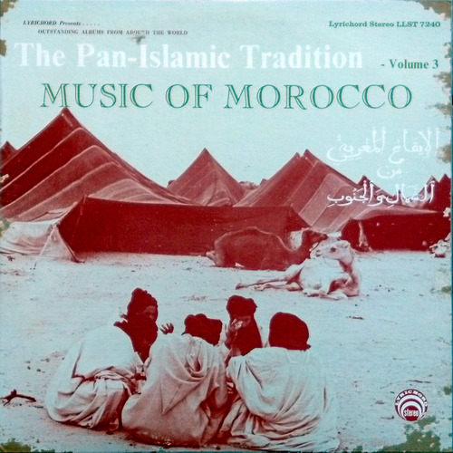
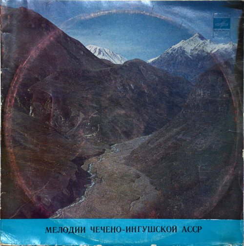
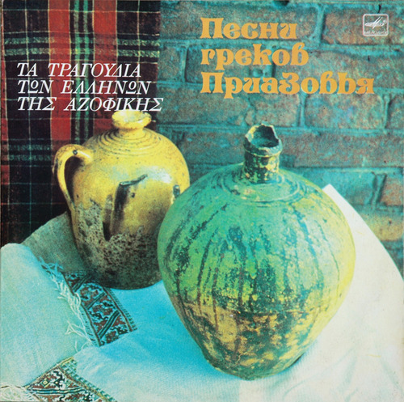
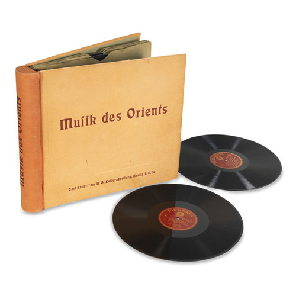
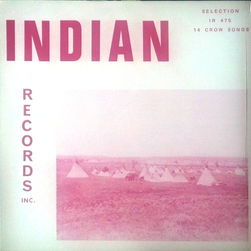
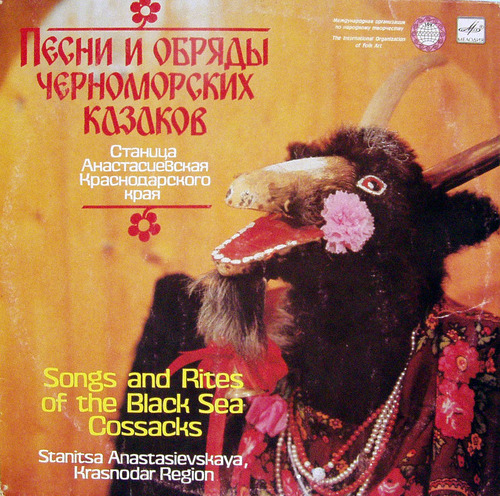

Chukotskaya Lights Entering the Place
Las 12 canciones usadas están en los siguientes discos:
Chukotskaya
Chukchi and Eskimo music 1974
Мелодия Д-35505
zhuzhulingo.blogspot.com.es
/ / /
EestiKarjaselaulud
Päike, tule välja 1960’s
Estonian pastoral songs
zhuzhulingo.blogspot.com.es
/ / /

Early Morning Birds
Music of the Tukano and Cuna Peoples of Colombia 1960
electropeasant.com
/ / /
Traditional (Toma Guinea??)
song from archive.org (thomas ladonne??) 19??
archive.org
/ / /
Entering The Place
Ikkul I-Mahal (entering the place) 1975
Marrakesh
electropeasant.com
/ / /
Checheingu
Хороша любовь (El amor del bueno) 1966
Music of the Chechnya - Ingushetia ASSR
(U. Dimaev, harmonica & Ya. Peisakhov, doul)
zhuzhulingo.blogspot.com.es
/ / /

Isongo
B1 Isongo Musique de danse avec xylophone
Musique Centrafricaine 1962
differentwaters.blogspot.com.es
región de Bambari
/ / /

PesniGrekov
Songs of the Azov Greeks 1985
Compiled by Aleksandr Ashla
zhuzhulingo.blogspot.com.es
/ / /
JapanIlaUtaUmenino
(Japan) Ha-uta “Umenimo Haru” 1928
Musik des Orients. Erich von Hornbostel
lolaradio.blogspot.com.es
/ / /
GrassDanceSong
Recorded on June 9, 1968 in Crow Agency
electropeasant.com
/ / /
Anastasievskaya
Songs and customs of the Black Sea Cossacks (Anastasievskaya village, Krasnodar region) 1986 - 1990
zhuzhulingo.blogspot.com.es
/ / /

NorthernLights
Звукоподражания голосам птиц (Onomatopoeia las voces de las aves)
Music of the Northern Lights 1964 - 1989
zhuzhulingo.blogspot.com.es